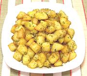

|
Potatoes with Rosemary & SageItaly - Patate al Sale Profumato | ||||
| Makes: Effort: Sched: DoAhead: |
4 side ** 45 min Yes |
These Italian fried potatoes pack a lot of flavor. They can be made ahead and reheated in a 325°F/160°C oven. Serve hot or warm. | |||
|
|
1-1/2 1/4 1/4 1 5 1 3 1/2 1/4 |
# c c cl t t |
Potatoes (1) Olive Oil ExtV Butter Garlic Sage Leaf (2) Rosemary sprig Parsley sprig Salt Pepper |
Make - (45 min)
|